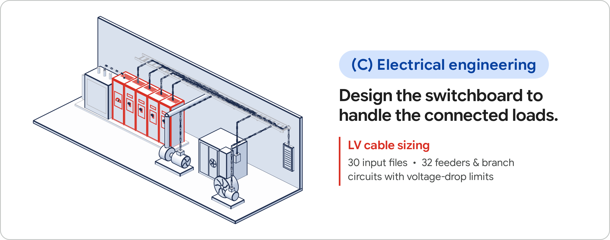
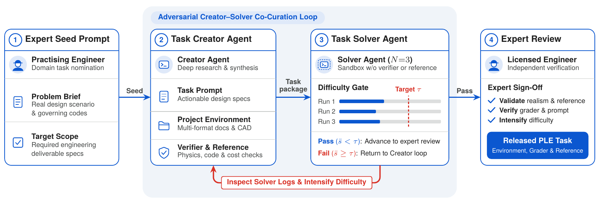

PLE: Physical-Engineering's Last Exam
论文笔记: PLE: Physical-Engineering's Last Exam
PLE 最值得记住的地方，是把“懂工程知识”推进到“能否交出同时满足工程约束的文件包”。 它围绕真实工作形态构造任务，用专家评分细则或可执行检查验收成果；对多数共编设计题，只有安全与可行性硬约束全部通过，经济优化才计分。实验最有信息量的发现也落在这里：模型可以满足大多数单项要求，却仍很难交出完全可行的设计。
我的判断是：这篇论文为工程智能提供了有用的端到端测试环境，但它的平均分不能直接解释为独立交付成功率，更不能解释为工程师工作的可替代比例。理解它，需要一起看交付物、硬约束门槛和题目筛选方式。
1. 背景信息
- 团队与版本：Rujun Han、Yufan Zhuang 等，主要来自 Google Cloud AI Research，另有 Google 作者；Mercor 组织工程专家参与任务编写与审核。本文阅读的是 2026-10-21 提交的 arXiv v1，未将其视为已录用会议论文。
- 原始材料：论文全文、PDF、官方代码、项目与榜单、数据集。已阅读全文与附录 A–C，核对原图；未运行基准，也未逐题审计公开评分器。
- 口径提醒（2026-10-26）：论文结果覆盖全部 85 题；官方仓库现已提供 29 道公开开发题，竞赛榜单使用 56 道隐藏测试题。官网的 Opus 5.5 原生框架分数为 48.3%，与论文全题集的最高分口径不同，不能直接比较。官方说明
2. 关键问题：算对一根电缆，离完成整套电气设计还有多远？
Golden Case：论文中的低压电缆选型任务（LV cable sizing）。 Figure 1C 展示了一个包含 30 个输入文件、32 条馈线与分支回路的工程任务。Appendix C / Figure 9 用同类任务演示专家如何提名题目：输入包括 DXF 单线图、XLSX 负荷表、PDF 土壤热阻报告、包含旧版本的业主要求，以及厂商目录和价目表；目标是在约束下尽量降低导体与导管的安装材料成本。

来源：Figure 1C，Han 等，CC BY 4.0。图中要看的是相互连接的设备和回路：一张电流计算表正确，并不足以保证整套配电设计正确。
困难从计算之前就开始：哪份要求仍然有效？负荷、敷设条件和材料价格分别在哪份文件里？选小线径可能便宜，却不满足载流量、热降额或压降要求；一味放大线径也未必符合设备端接和采购限制。后两句是根据该任务约束解释的潜在失败方式，不是论文公布的某条模型失败轨迹。 Figure 9 本身是提名界面的示例，也不等于一个已逐项验证的模型解答。
传统问答题往往把条件整理好，模型只需返回答案；单工具任务则只检查某次 CAD 或仿真操作。PLE 要求模型自己找条件、协调条件，并把结果写入原生文件。即便文件通过二元合规检查，也还需区分“合规但昂贵”和“合规且经济”的方案。这是它在 GDPval、APEX-Agents 式专业交付评测之外增加的设计质量维度。§1–3；Appendix C
3. 关键方法：把工作请求、项目资料和验收规则绑在一起
3.1 沿同一案例走完输入到验收
PLE 是基准与任务构建方法，没有训练一个新的工程模型。每道题包含工作指令、项目环境、交付格式和对求解者隐藏的评分器。对电缆任务，可以把必要的数据流理解为：
- 读资料、确定适用要求：从图纸与表格关联回路、设备和负荷，识别文件版本；从规范、报告与目录提取限制及来源。
- 形成设计并校核：选择电缆与导管，在载流量、热降额、压降及设备兼容条件下比较成本。PLE 没有规定必须采用哪种优化算法，这一步是求解者的工作。
- 产出可检查的文件包：Figure 9 的示例要求回路选型工作簿（XLSX）、更新后的单线图（DXF），以及带来源的规范要求登记表（JSON）。来源登记使“是否找对依据”也能进入评分，而不只检查最后一个数字。
- 隔离验收：运行结束后收集声明的交付文件，在求解容器之外评分。求解者看不到参考解、评分细则或得分反馈；它可以自行校核，但不能借隐藏评分器反复试分。
这条流程说明了为什么仅把规范全文塞进上下文仍不够：同一要求需要贯穿检索、设计决策和最终文件之间的一致性。 上述步骤是按论文协议整理的数据流，不是作者提出的固定求解器架构。§3、§5.1
3.2 为什么要把硬约束和优化得分分开？
对于采用通用公式的共编任务，作者先给每个交付项打分，再对这些项取均值：
其中，$p$ 是全部约束的通过比例，$G\in\{0,1\}$ 表示是否通过全部硬约束，$O'\in[0,1]$ 表示归一化后的设计目标得分。安全、可行性属于硬约束；文档与惯例要求可属于软约束。只要有硬约束失败，优化项就不计分，但仍可能保留部分约束分。 不能把这一门槛误读成“任何不安全设计的总分一律为零”。§3.2，Eq. 1
对于最低成本设计，作者定义：
$c$ 是提交设计的成本，$c_{\mathrm{bound}}$ 是合规设计成本的经认证下界；$O_{\mathrm{naive}}$ 来自任务校准中的朴素合规方案，没有该方案时取零。这样，模型不能仅靠“把所有电缆都选得很粗”得到优化分；它需要在合规基础上超过朴素基线。下界也不一定可达，因此它不同于一个已知可实现的最优设计成本。Eq. 2
为便于理解构造一个评分例子：某电缆交付项满足 95% 的约束，却漏过一个硬约束，则得分为 38%；全部合规但只做到朴素基线，得 40%；全部合规且 $O'=0.5$，才得 70%。这三个数是公式演算，不是论文实验结果。
这里有两个实现边界：41 道共编题中，两道场地设计题和两道机电协调题使用各自评分器，不直接套上述公式；机电布线发生硬碰撞或漏服务一排设备会被判零分。另有 12 道共编题的评分器用 LLM 判断少量叙述性软约束，因此也不能把共编题统称为“完全确定性评分”。§5.1
3.3 这些复杂任务怎样造出来？
作者用两条路线：专家编写题由执业工程师从头准备工作请求、项目资料与加权二元评分细则；共编题则从工程师提供的任务种子出发，由 Creator 搭建环境、评分器和参考交付物，再由 Solver 试做与专家审核。

来源：Figure 4，Han 等，CC BY 4.0；从 PDF 第 8 页提取图区域。重点看红色回路：Solver 做得太好，任务会退回加难；参考解与评分器仍需独立审计和专家检查。
沿电缆案例，工程师先指定情境、输入、优化目标、约束、验证方式和输出格式。Creator 再搜集有再分发许可的真实资料，构成至少三种格式的环境，保留旧版文件等干扰项，并把要求分散在不同资料中。Solver 在看不到评分器和参考解的条件下通常试做三次；均分低于难度阈值才进入后续审核，否则 Creator 根据轨迹补充真实约束、调整目标或丰富环境。两者均使用 Claude Opus 5，分别运行于 Claude Code 和 Hermes。§3.2、Figure 4
为什么不是直接让 LLM 出题？ 专家种子约束“什么值得做”，参考解与评分器约束“能否验收”，对抗试做发现过于容易的捷径，最终专家检查真实性与一致性。但论文未给出统一难度阈值的数值，也未报告各轮加难的保留率与消融，因此不能把这套流程当成已验证最优的出题策略。
4. 数据集：两种任务形态，不能当成同分布的对照组
PLE 共 85 道任务、53 个独立环境，覆盖机械 30 题、电气 27 题、土木 18 题、结构 10 题。44 道专家题共享 12 个项目环境；41 道共编题各有独立环境。每题平均 60.8 个输入文件，最多 207 个。统计中的总文件量按任务累计，会重复计入复用环境，不能当作独立文件数。Table 2、Figure 5、§4
专家题更偏文档审查和正式意见交付，平均要求 1.1 个输出文件；共编题更多包含 CAD/BIM 与多文件设计，平均要求 4.9 个输出文件，而且全部结构题来自共编路线。前者按专家细则的加权通过比例评分，后者多数还要通过硬约束并优化目标。两类分数的差异同时混入任务类型、学科和评分规则，不能单独归因于“机器辅助出题更难”。 本文没有用这些任务训练模型。§3.1、§4、Figure 7
5. 关键结果：瓶颈是完整可行性，而不只是有没有生成文件
共同设置：14 个模型、86 个实际运行的模型与框架组合；主要交叉比较七种通用 harness（提供工具与运行流程的框架），GPT 6 Astra 只测 Codex，Grok 4.7 另用专属 Grok Build。因此不是完整的 $14\times7$ 设计。各模型使用最高推理设置，每组合每题运行三次，每次限六小时；求解期间只能访问模型代理，不能自由联网。无可评分交付物的运行记零分。§5.1；Appendix A，Table 4
5.1 基准仍有空间，但最高分不是“完成一半工程工作”
下表选取性能与费用取舍有代表性的配置；均为论文全体任务的平均分，费用按论文实验时的标价计算，不是当前报价。Figure 2、§5.2、Table 5
| 模型与框架 | 平均任务分 | 每题费用 |
|---|---|---|
| Claude Opus 5.5 / Claude Code | 50.6% | 17.18 美元 |
| GPT 6 Astra / Codex | 48.3% | 9.15 美元 |
| Gemini 4 Argon / Claude Code | 43.2% | 8.21 美元 |
| Gemini 3.8 Flash / Claude Code | 28.2% | 2.55 美元 |
最强配置的任务分中位数为 43.5%，48 道题低于 50%。这些结果支持“目前通用智能体尚未让该基准饱和”，但平均分混合了评分细则、约束满足和经济目标，不是任务成功率，也不是人工签署通过率。论文没有报告同协议下的人类工程师端到端成绩与耗时，因而不能据此定量判断人机差距。§5.2、Figure 8
5.2 最强的证据：多数约束通过，不等于全部硬约束通过
作者对 Opus 5.5 / Claude Code 的共编任务交付项做失败分析：平均约束通过率达到 91%，但仅 41.3% 的交付项通过全部硬约束，能够获得 Eq. 1 的目标分。分母是交付项，不能改写成“41.3% 的任务完全完成”。它在全部 255 次运行中只有 11 次零分，说明主要损失不只来自无输出，还来自已产出文件中的可行性缺口。§5.3，Where agents fail
回到电缆案例：做对很多条款，并不能抵消漏掉一条热降额或设备端接要求。这一观察与门控评分的设计吻合。但它还没有证明根因是模型不懂物理：错误也可能来自找错文件、漏读条款、跨文件不一致或写出文件时丢失参数。论文没有用受控干预拆开这些来源。
工作量也很不均匀：该配置在共编题上平均消耗 39.3M tokens、97 分钟，在专家题上为 15.6M、31 分钟；全体平均为 27.0M、63 分钟。原文未在此处拆分 token 的缓存与输入输出计数，不能把它解释成生成了同等长度的独立推理文本。§5.3
5.3 模型影响大，运行框架和评分可靠性仍需单独看
固定 Opus 5.5，七种框架的分数范围是 47.3%–50.6%；但 Codex 配置每题费用为 35.15 美元，明显高于前表中的 Claude Code。作者据此认为模型差异大于通用框架差异。这个结论适用于被测配置，不能推出“针对工程约束设计的专用工作流没有价值”。Table 3、§5.2–5.3
集合均分也掩盖个案波动：同一任务与框架下，三次运行分数的平均极差为 15.4 个百分点，595 个组合中有 105 个极差至少 30 点。复现实验应重复运行，不能拿一次漂亮案例代表可靠交付。§5.3
评分器方面，默认 LLM 裁判也是 Opus 5.5。作者重评其输出时，同模型第二次判断的一致率为 98.7%，Gemini 4 Argon 与该次判断的一致率为 95.5%。这是有用的评分稳定性检查，但模型之间的一致不等于专家认定正确；重评对象限于 Opus 5.5 的输出，也未验证所有参评模型的排名在更换裁判后都稳定。§5.3，Effect of the rubric judge
6. Insights
6.1 优先试“可追溯约束表 + 独立校核 + 修复”，再看是否需要更多推理
论文最强模型已能覆盖多数要求，却经常卡在硬约束的交集。这让我更想先测试一个具体干预：把“来源文件—条款—数值—对应设计变量”保存为结构化约束表，在导出前后用独立校核器检查，再针对失败项修复。固定模型和总预算，与自由推理比较，同时报告全部硬约束通过率与通过后的目标质量；若只改善后者，说明核心可靠性问题仍在。这是由论文失败分析提出的实验，不是 PLE 已证明有效的方法。
6.2 对抗选难有助于找能力边界，却不能估计真实业务覆盖率
Creator–Solver 循环会把模型容易解决的题退回加难，最终集合天然偏向当前求解者的难点；两种出题路线又有明显任务分布差异。因此，“PLE 分数低”与“真实工程日常任务大多不能做”之间还缺一座桥。我会另建未经模型成功率筛选、按真实工作频率抽样的任务集，与 PLE 配对评估：前者估计业务覆盖，后者测试困难边界。两者的统计目的不同。
6.3 经济目标的归一化值得复用，也值得被审计
把合规与优化质量分开，比单纯判文件是否齐全更接近工程取舍。但 $O'$ 同时依赖成本下界的紧致程度和朴素基线的强弱，不同任务上的同一分数未必代表同等优化能力；0.4/0.6 的权重也会影响聚合结果。论文没有给出这些选择的排名敏感性分析。若采用这个基准，我会要求同时导出原始成本、下界、朴素基线和硬约束结果，并测试替换基线或改变权重后结论是否稳定，而不是只保存一个总分。
7. 连接与发现
- MOC-LLM-Agent-Evaluation-and-Debugging — Topic：把长程智能体评估推进到工程交付物，并用约束检查区分部分正确与完整可行；进一步的失败原因仍需干预实验。